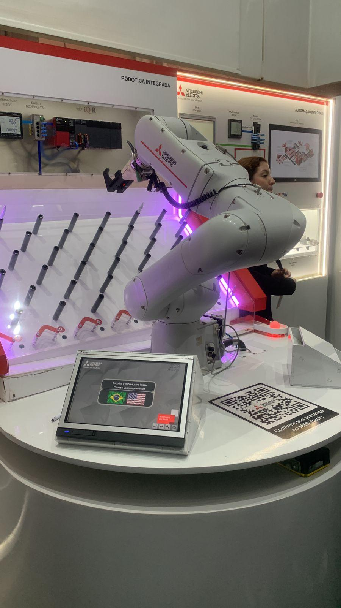
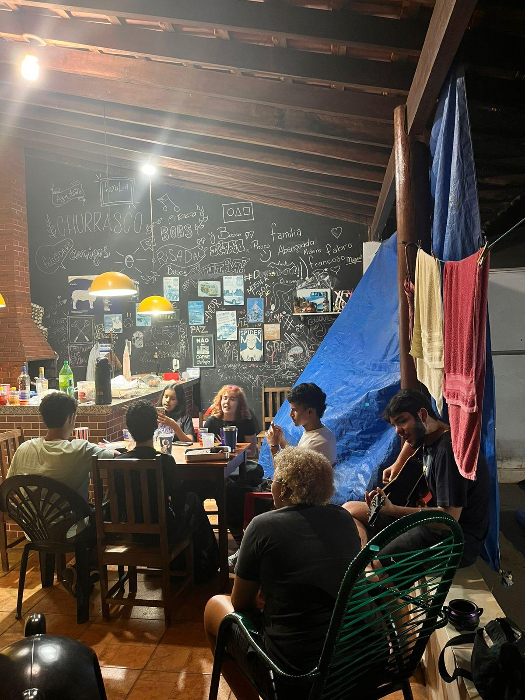
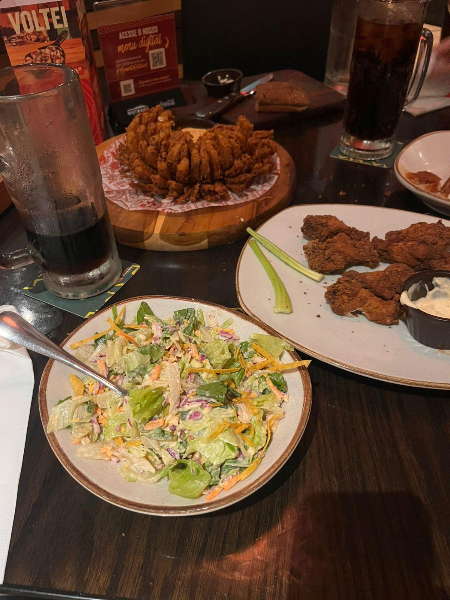

Games e Cultura Geek
Sou fascinado por narrativas profundas e universos imersivos. Nos games, sou fã de experiências narrativas como The Last of Us, que elevam o patamar do storytelling, além da complexidade estratégica encontrada em RPGs. No mundo dos animes e séries, acompanho desde clássicos como One Piece e Dragon Ball até a longa jornada de Supernatural. Também sou um grande entusiasta de filmes de terror, apreciando o suspense e a construção de atmosfera que o gênero oferece para prender a atenção do início ao fim.
Principais Franquias
- Pokémon
- Jogos Vorazes
- MARVEL

Encontros caseiros
Valorizo muito os "rolês caseiros" com meus amigos. Não há nada melhor do que reunir o pessoal para jogar algo, conversar por horas e aproveitar a companhia um do outro em um ambiente descontraído. Para mim, esses momentos de lazer e troca de ideias são essenciais para recarregar as energias e fortalecer os laços, provando que as melhores memórias muitas vezes são criadas dentro de casa, com boa conversa e diversão compartilhada.

Gastronomia
A gastronomia é outro grande interesse na minha vida. Gosto de explorar novos sabores, entender a composição dos pratos e apreciar a culinária como uma forma de arte e conforto. Seja cozinhando ou conhecendo novos lugares, a experiência gastronômica é algo que sempre busco aprimorar, valorizando desde o preparo técnico até o prazer de degustar uma boa refeição.